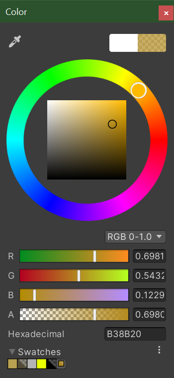
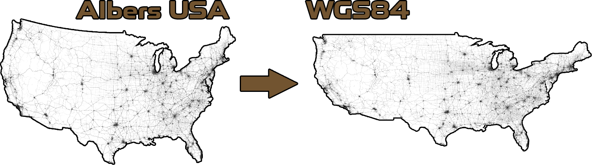

Data Textures
Using data stored in textures.
We use image files in Outbreak Simulator to store and display spatial data. We call these files textures because although they’re image files, it isn’t pictures that we’re putting into them.

Simply speaking, a texture file can be thought of as a grid of pixels. In a standard colored image, each pixel has a color defined by three channels: red, green, and blue. Each channel holds a value for that pixel which, in the case of color channels, tells us how much of that color is present in the pixel. We usually think of the value of channel as being a floating-point number between 0 and 1.
In addition to having three channels per pixel for color, many textures include a fourth channel that defines the opacity of the pixel, or how see-through it is. Some formats even allow for additional channels which aren’t usually visible if trying to view the texture as an image.
(Image: Color picker in Unity showing the RGBA channel values for a semi-transparent gold color)
Although image files are most often used for storing pictures, they’re also commonly used in games to store other types of information. We can use the channel values of textures to represent any data in any range. Scaling the value from being between 0 to 1 to being between any arbitrary minimum (min) and maximum (max) is pretty straight-forward: (max – min) • value + min
The precision of the value stored in each channel is referred to as bit depth. Most images have a bit depth of 8, which means that there are 256 (2^8) possible values stored per channel per pixel. Some formats allow for higher bit depths. Because the level of precision goes up exponentially as the bit depth gets higher (for example, 16bit gives 65536 possible values), it’s not too unrealistic to create textures that contain amazingly precise data
Textures for World Data
In order to make Outbreak Simulator as interesting and realistic as possible, we use many types of spatial data from the real world to run our simulations over. These data include elevation, population, temperature, water coverage, road use trends, and more. We find most of this data in the form of a special kind of image file called a GeoTIFF.
GeoTIFF is a public domain format that allows georeferencing information, including map projection and coordinate systems, to be embedded within a TIFF file (a non-lossy format that allows for addition channels and bit depths of more than 8 bits per channel). Programs like QGIS can interpret this extra information and allow us to change the scale and reference coordinate system, if necessary, so that we can use it in our simulation.
The coordinate reference system that we use is. This is a widely used and easily interpreted projection where the horizontal axis represents longitude between -180° and +180° and the vertical axis represents latitude between -90° and +90° evenly gridded out. WGS 84 is the standard U.S. Department of Defense definition of a global reference system for geospatial information and is the reference system for the Global Positioning System (GPS). It is compatible with the International Terrestrial Reference System (ITRS).

(Image: Road use trends data being converted from Albers USA to WGS84)
Creating and using procedural textures in unity In addition to using data stored in textures, we also use Unity to create our own data textures in real time as the simulation runs.
We can scale our own data for things like, for example, how many and where cases of an outbreak exist into channel values and use Texture2D.SetPixels to create a texture containing this information. The textures we use to display information to the user.